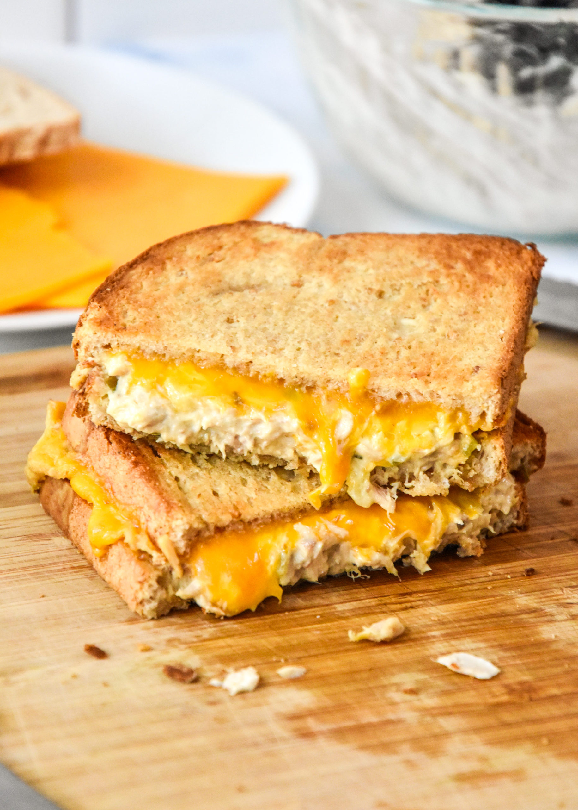

Toasted Tuna Melt

Ingredients
- Two slices of bread
- One 4oz can of tuna
- 2 tbsp of mayonnaise (no miracle whip please...no one should do that to food.)
- Two slices of cheddar cheese
- 1 tsp lemon juice
- Salt and pepper
- two sliced of tomato
- Butter
Recipe
- Open the can of tuna and drain the excess juice
- In a bowl mix the mayonnaise, lemon juice and salt and pepper until it reaches the desired consistency
- Spread butter on the outside of each side of the bread
- between the slices of bread, add mayo (if desired) the slices of tomato and the slices of cheese.
- Between the cheese slices, spread hte tuna mixture
- Fry in a frying pan until golden brown on each side